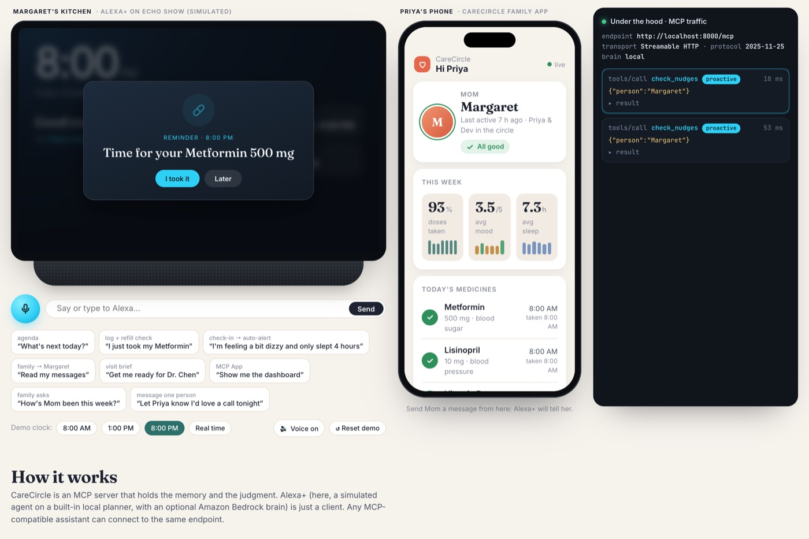

fav!
CareCircle
Alexa+ that remembers, so families don't have to worry. It keeps track of an older person's medicines, mood and sleep, reminds them at the right time, and decides on its own when their kids need to know.
Built for Next Byte Hacks V5 and Amazon's Alexa+ hackathon track.